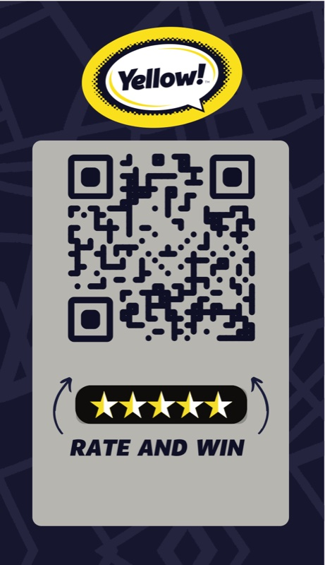
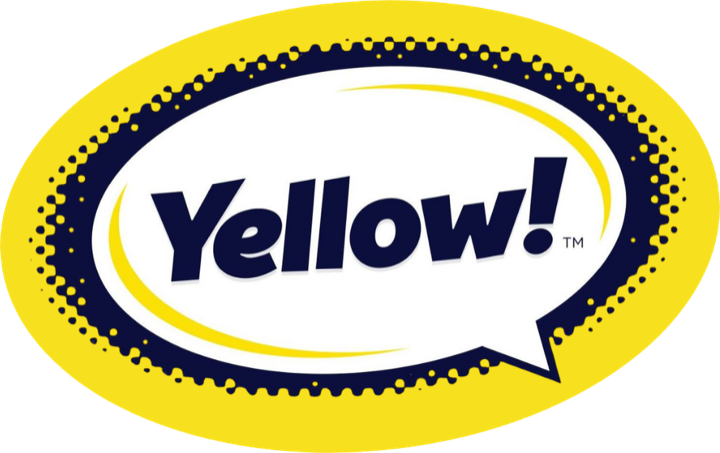

„Оценете ни в Google и спечелете промокод!“
- 1Покажи QR кодана стикера Rate and Win
- 2Клиентът оставя отзив в Googleи получава промокод
- 3+1 за теб в класациятатоп 3 печелят награди


„Оценете ни в Google и спечелете промокод!“
